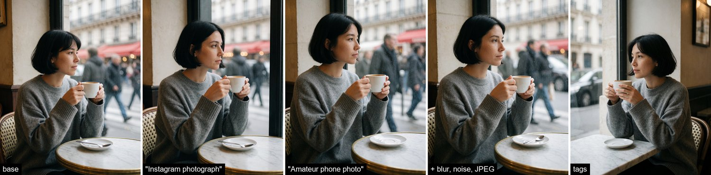
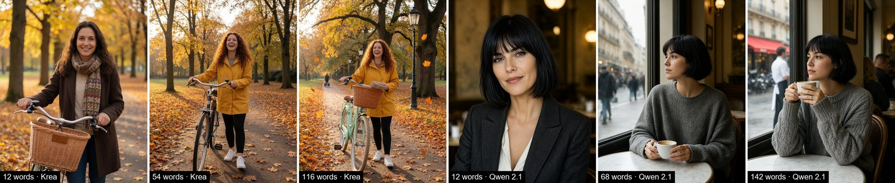
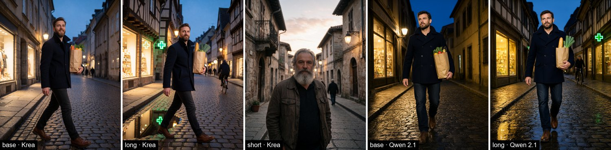
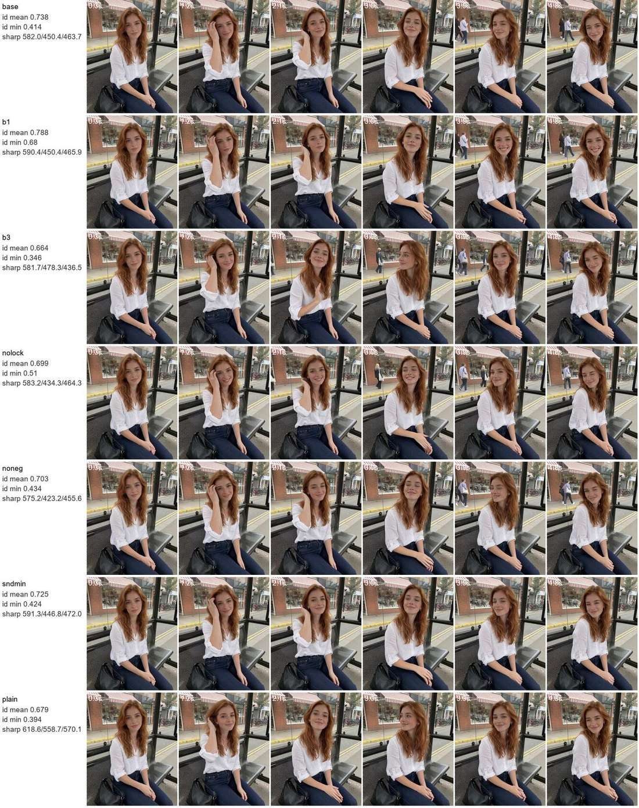

Проверенные правила вместо советов из сети: 156 кадров на Krea 2 и Qwen 2.1 и 14 клипов H3 на одних и тех же сюжетах. И шаблоны, которые можно копировать.
Шаблоны серии 0, с кнопкой копирования. Ярлыки вроде «crisp detailed instagram photograph» в них можно убрать: по замерам серии 7 они почти не влияют на кадр, работают описание субъекта и сцены.
integrated_multimodal_description: [Shot 1] <Picture 1> is the first frame. Whole clip is 5 seconds. Live-action. Static medium shot of a fictional 28-year-old woman sitting on a black metal mesh bench inside a glass bus shelter in daylight. Appearance lock: long wavy copper-red hair, freckles, mature adult face, light everyday makeup, untucked white linen blouse with rolled sleeves, dark-blue high-waisted jeans, small silver pendant, silver hoop earrings, black bag on the bench. Keep face, outfit and proportions exactly as in <Picture 1>. Background lock: red brick shop with striped awning, yellow curb, glass shelter panels with soft reflections; background stays still apart from natural light flicker. [Shot 2] 0s-2.5s: she lifts her right hand and tucks a strand of hair behind her ear, then smiles warmly at the camera; small natural breathing and blinking. [Shot 3] 2.5s-5s: she glances briefly to her left toward the street, looks back at the camera and gives a small playful wink, then relaxes, hands return to her lap and she keeps smiling softly. camera: handheld phone feel, almost static, very slight natural sway, no zoom, no cuts. overall_soundscape: quiet city street ambience, distant traffic, a soft breeze, faint footsteps on the pavement. non_diegetic_music: None. negative: morphing face, identity drift, extra fingers, warped hands, flicker, jitter, text, subtitles, watermark, music, talking.
crisp detailed instagram photograph of masterpiece, best quality, realistic, photorealistic, photo \(medium\), [age]-year-old adult woman, [face], [hair], [build], [pose and hands], [clothing], [location: 3–5 concrete objects], [light], [camera angle], bokeh, depth of field
Amateur smartphone photo of a fictional [age]-year-old adult woman, late-20s, mature facial features, [face: eyes, nose, lips, freckles, uneven skin tone, faint visible veins], [hair], [build], [pose and action], [clothing item by item], [location with 3–5 concrete background objects], [light: harsh side light with deep shadows on the far side], slight phone-camera noise, natural skin texture, unretouched.
Советов «как писать промпт» в сети много, проверенных — мало. Мы проверили их сами. Для фото взяли три сюжета (женщина в кафе, мужчина на вечерней улице, женщина с велосипедом в осеннем парке) и описали каждый в 8–10 формулировках: связный текст, теги, 12 слов, 120+ слов, «instagram photograph», «amateur phone photo», слова про шум и смаз, возраст словами вместо числа, описание фигуры. Каждый вариант — на Krea 2 Turbo и Qwen-Image 2.1 Turbo, по три одинаковых сида: всего 156 кадров. Для видео — один первый кадр и семь вариантов промпта на MiniMax H3, по два сида. Считали в облаке на RTX 5090: 1,7 часа, $2,09.
Оценка: резкость, «пластиковость» кожи, оценка возраста по лицу, эстетика (LAION), совпадение с описанием (CLIP), для видео — сходство лица с первым кадром (ArcFace) по 21 кадру. И, как всегда, листы, которые смотрели глазами.



| Вариант | Krea: резкость / эстетика | Qwen 2.1: резкость / эстетика | Что видно |
|---|---|---|---|
| 12 слов | 126 / 5,91 | 212 / 6,22 | своя одежда и типаж; Krea старит, Qwen гламурит |
| ~60 слов (база) | 171 / 5,88 | 334 / 6,04 | описание выполнено |
| 120+ слов | 202 / 6,04 | 483 / 6,06 | все детали на месте, кадр резче всех |

| Вариант промпта (5 с) | Сходство лица, 2 сида | Минимум | Вывод |
|---|---|---|---|
| 1 действие | 0,79 / 0,76 | 0,68 / 0,53 | самое стабильное лицо |
| 2 действия (база) | 0,74 / 0,71 | 0,41 / 0,42 | хороший баланс |
| 3 действия | 0,66 / 0,72 | 0,35 / 0,40 | всё выполнено, лицо гуляет |
| без фиксации внешности и фона | 0,70 / 0,70 | 0,51 / 0,36 | чуть хуже базы |
| без списка «не делать» | 0,70 / 0,70 | 0,43 / 0,42 | чуть хуже базы |
| звук одной строкой | 0,73 / 0,72 | 0,42 / 0,41 | на картинку не влияет |
| простой абзац | 0,68 / 0,70 | 0,39 / 0,43 | движения мягче, кадр на 15–25 % резче, действия размыты |
Фото (Krea 2, Qwen 2.1). Порядок: кто → где → что делает → одежда → камера → свет → настроение, затем 4–5 предложений деталей.
Natural photo of [age]-year-old [person, hair, 1–2 face details] [place], [action]. [She/He] wears [outfit].
[Shot size, lens, angle], [light]. [Mood] mood.
[Background detail.] [Object detail.] [Texture detail.] [Colour palette.] [Skin: natural texture, no retouching.]Видео (MiniMax H3, 5 с).
integrated_multimodal_description: [Shot 1] <Picture 1> is the first frame. Whole clip is 5 seconds. Live-action. [Shot] of [who] [where].
Appearance lock: [hair, face, marks, outfit]. Keep face, outfit and proportions exactly as in <Picture 1>.
Background lock: [3–4 background anchors]; background stays consistent.
[Shot 2] 0s-2.5s: [action 1 with the hand that does it].
[Shot 3] 2.5s-5s: [action 2].
camera: [static / handheld], no zoom, no cuts.
overall_soundscape: [3–5 sounds]. non_diegetic_music: None.
negative: morphing face, identity drift, extra fingers, warped hands, flicker, text, subtitles, watermark, music, talking.Референсы. Qwen 2.1: «the woman from image 1 wearing the jacket from image 2», назовите, что должно остаться («same face, hair and outfit»), и опишите позу словами. Klein: те же фразы с <ref_image_0>. H3 Ref2V: <Picture 1>–<Picture 3> — «identity references only, not the first frame or the framing». Подробности — в главе «Перенос по референсу».
Для ИИ-агентов: эта глава в Markdown · llms.txt